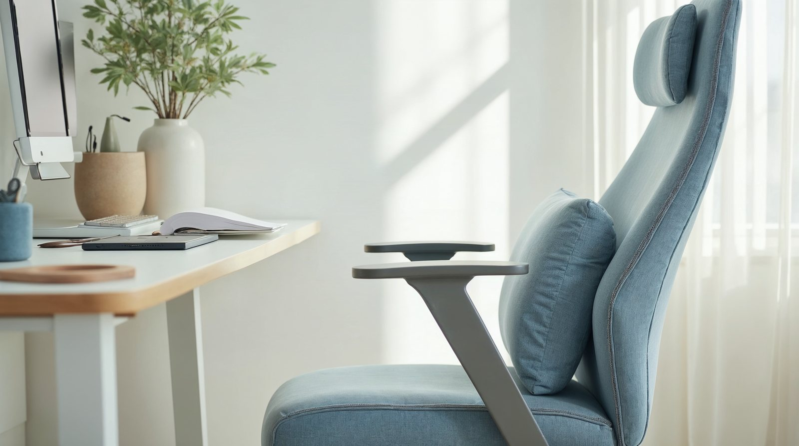
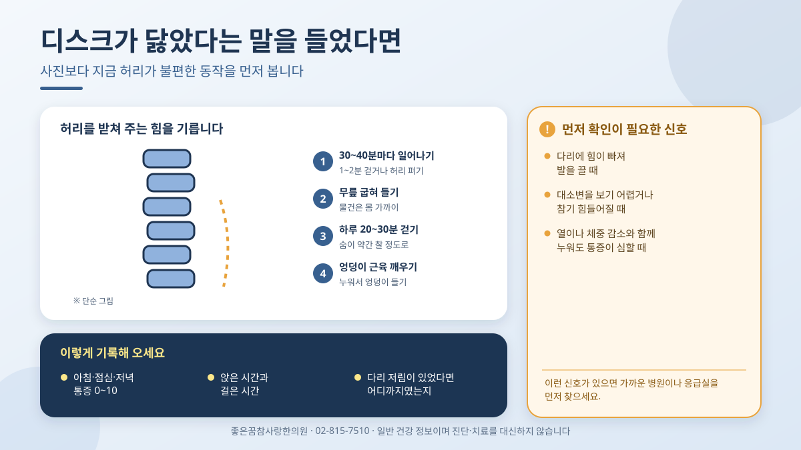

이종호 한의사 감수좋은꿈참사랑한의원 대표원장 (한의사 면허번호 19769)발행 2026-11-26 · 수정 2026-11-26
이 글의 차례
진료실 책상 위에 영상 검사 결과지 한 장이 놓입니다. 손가락으로 짚으시는 줄에는 '퇴행성 변화', '디스크 높이 감소' 같은 낯선 말이 적혀 있습니다. "원장님, 제 허리 디스크가 다 닳았대요. 이제 점점 나빠지기만 하는 건가요?" 목소리에 걱정이 가득합니다.
저는 이 질문을 들을 때마다 먼저 결과지를 잠시 내려놓으시라고 말씀드립니다. 사진에 보이는 변화는 분명 몸의 한 모습이지만, 그것이 지금 느끼시는 통증의 전부를 설명하지는 않는 경우가 많기 때문입니다. 겁부터 나는 마음을 조금 가라앉히고, 하나씩 나눠서 보면 생각보다 할 수 있는 일이 많습니다.
퇴행성 디스크라는 말은 무섭게 들리지만, 사실 머리카락이 희어지고 피부에 주름이 생기는 것처럼 나이와 함께 찾아오는 변화에 가까운 표현입니다. 통증이 전혀 없는 분들의 사진에서도 흔히 보입니다. 중요한 것은 사진 속 디스크가 아니라, 지금 내 허리가 어떤 동작에서 어떻게 불편한지입니다.
그래서 저는 결과지보다 하루의 장면을 먼저 여쭙습니다. 아침에 일어날 때, 세수하려고 허리를 숙일 때, 오래 앉아 있다 일어설 때 중 언제가 가장 힘드신지요. 그 대답 안에 앞으로 무엇을 바꿔 볼지가 담겨 있습니다.
이 글은 결과지를 받아 들고 마음이 무거워진 분들께 드리는 설명입니다. 디스크가 무엇인지, 왜 사진과 통증이 다르게 갈 수 있는지, 그리고 오늘부터 생활에서 해 볼 수 있는 것과 한의원에서 함께 살필 수 있는 것을 차례로 정리했습니다.
디스크가 닳았다는 말은 무슨 뜻인가요
디스크는 척추뼈와 척추뼈 사이에 끼어 있는 쿠션입니다. 가운데에는 말랑하고 물기를 머금은 속 부분이 있고, 바깥은 질긴 섬유 테두리가 감싸고 있습니다. 걷고 앉고 숙일 때마다 이 쿠션이 눌렸다 펴지며 충격을 나눠 받습니다.
나이가 들면 디스크 속의 물기가 조금씩 줄어듭니다. 물기가 줄면 쿠션의 높이가 낮아지고, 영상에서는 색이 어둡게 보이거나 뼈 사이 간격이 좁아져 보입니다. 이것을 흔히 디스크가 닳았다, 퇴행성 변화가 있다고 설명합니다. 뼈 가장자리가 조금 자라나는 변화가 함께 보이기도 합니다.
이 변화는 하루아침에 생긴 것이 아니라 오랜 시간에 걸쳐 천천히 진행된 것입니다. 그래서 몸도 그동안 나름대로 적응해 온 경우가 많습니다. 사진에서 변화가 뚜렷해도 통증이 가벼운 분이 있고, 변화가 작아도 꽤 불편한 분이 있는 이유입니다.
왜 디스크 변화와 통증이 꼭 같이 가지 않을까요
허리 통증은 디스크 하나만의 문제가 아닌 경우가 많습니다. 척추 뒤쪽의 작은 관절, 허리를 감싸는 근육과 인대, 엉덩이와 허벅지 뒤쪽 근육까지 모두 허리를 함께 지탱합니다. 그중 어디가 지쳐 있느냐에 따라 같은 사진을 가진 분들도 불편한 곳이 다릅니다.
- 오래 같은 자세로 앉아 허리 근육이 굳어 있는 경우
- 엉덩이 근육과 배 근육이 약해져 허리가 혼자 버티는 경우
- 잠이 부족하고 긴장이 이어져 통증을 더 크게 느끼는 경우
- 갑자기 무거운 것을 들거나 오래 숙여 일한 뒤 근육이 놀란 경우
- 추운 날씨에 몸이 움츠러들어 허리 주변이 뻣뻣해진 경우
디스크가 얇아지면 그 마디의 움직임을 주변 근육이 더 많이 나눠 맡게 됩니다. 이때 근육이 충분히 받쳐 주지 못하면 쉽게 지치고 뭉치면서 통증이 생깁니다. 반대로 근육과 움직임이 잘 받쳐 주면 같은 디스크로도 편안하게 지내시는 분이 많습니다.
디스크 탈출과는 어떻게 다른가요
퇴행성 디스크는 쿠션이 전체적으로 얇아지고 탄력이 줄어든 상태를 말합니다. 디스크 탈출은 그 속 부분이 바깥 테두리를 밀고 삐져나와 신경 근처를 누르는 상태입니다. 둘이 함께 있는 경우도 있지만, 같은 말은 아닙니다.
디스크 탈출로 신경이 눌리면 허리보다 엉덩이나 다리 쪽으로 저리고 당기는 느낌이 더 크게 나타나는 경우가 많습니다. 퇴행성 변화만 있을 때는 허리 가운데가 묵직하고 뻐근하며, 오래 앉거나 숙인 뒤에 불편이 커지는 모습이 흔합니다.
나이가 있으신 분은 디스크 변화와 함께 척추관이 좁아지는 협착이 생기기도 합니다. 협착은 걸으면 다리가 저리고 쉬면 풀리는 모습이 특징입니다. 어떤 모습인지에 따라 생활에서 피할 동작과 권하는 동작이 달라지니, 들으신 진단명을 정확히 알려 주시면 도움이 됩니다.
스스로 살펴볼 수 있는 몇 가지
집에서 아래 질문에 답해 보시면 지금 허리가 어떤 상태인지 조금 더 또렷해집니다. 정답을 찾는 것이 아니라 내 허리의 패턴을 알아보는 과정입니다.
- 앉아 있을 때와 서 있을 때 중 언제 더 불편한가요?
- 아침에 뻣뻣했다가 움직이면 풀리나요, 아니면 저녁으로 갈수록 심해지나요?
- 통증이 허리 가운데에 머무나요, 엉덩이나 다리로 내려가나요?
- 허리를 숙일 때와 젖힐 때 중 어느 쪽이 더 불편한가요?
숙이거나 오래 앉을 때 불편한 분은 디스크 쪽에 부담이 몰리는 경우가 많고, 젖힐 때 불편한 분은 척추 뒤쪽 관절이 관여하는 경우가 많습니다. 물론 이것은 대략적인 경향일 뿐이고, 진료실에서 직접 움직임을 보며 다시 확인합니다.
결과지를 읽을 때 마음에 두시면 좋은 것
결과지에는 여러 마디의 변화가 한꺼번에 적혀 있어서 읽을수록 불안해지기 쉽습니다. 하지만 영상 판독은 보이는 것을 빠짐없이 적는 문서입니다. 적혀 있는 모든 줄이 지금의 통증과 바로 이어진다는 뜻은 아니니, 한 줄 한 줄에 너무 마음을 쓰지 않으셔도 됩니다.
검사를 해 주신 선생님께 '그래서 지금 통증과 가장 관련 있는 것은 어느 부분인가요'라고 한 번 더 여쭤보시면 도움이 됩니다. 진료실에서도 결과지의 내용과 직접 살펴본 움직임을 나란히 놓고, 어느 쪽이 지금 생활을 더 불편하게 하는지 함께 정리해 드립니다.

일과 나이에 따라 달라지는 허리의 짐
같은 퇴행성 디스크라도 하루를 어떻게 보내시느냐에 따라 불편한 장면이 다릅니다. 사무실에서 하루 대부분을 앉아 지내는 분은 오후로 갈수록 허리가 무거워지고, 일어설 때 첫걸음이 뻣뻣한 경우가 많습니다. 서서 일하거나 물건을 나르는 분은 숙였다 펴는 순간에 찌릿함을 느끼기 쉽습니다.
연세가 드신 분은 디스크 변화에 근육량 감소가 겹치면서 허리를 받쳐 주는 힘이 함께 줄어드는 경우가 많습니다. 이때는 허리만 보기보다 다리 힘과 걷는 모습, 넘어지지 않는 균형까지 함께 살피는 것이 좋습니다. 젊은 분이라면 앉는 시간과 운동 부족을 먼저 들여다봅니다.
잠자리도 허리의 짐과 관련이 있습니다. 너무 푹 꺼지는 매트리스나 너무 딱딱한 바닥에서 주무시면 아침에 허리가 굳은 채로 깨기 쉽습니다. 옆으로 누우실 때 무릎 사이에 베개를 하나 끼우거나, 바로 누우실 때 무릎 아래를 살짝 받치면 허리가 한결 편하다고 하시는 분이 많습니다.
먼저 이렇게 여쭙니다
처음 오시면 저는 대략 이런 순서로 여쭙니다. 미리 떠올려 오시면 이야기가 수월해집니다.
- 언제부터 허리가 불편했고, 계기가 된 일이 있었나요?
- 어떤 검사를 받으셨고, 어떤 설명을 들으셨나요?
- 하루 중 언제, 어떤 동작에서 가장 불편하신가요?
- 다리 저림이나 당김이 있다면 어디까지 내려가나요?
- 하시는 일과 앉아 있는 시간, 운동 습관은 어떠신가요?
- 지금 드시는 진통제나 다른 약이 있나요?
잠과 소화, 대소변도 함께 여쭙니다. 허리가 아픈데 왜 그런 것까지 묻나 싶으시겠지만, 잠을 못 자면 근육이 회복할 시간이 줄고, 배가 차고 더부룩하면 허리 주변도 쉽게 굳습니다. 몸 전체의 흐름을 보는 것이 허리를 이해하는 데 도움이 됩니다.
일상에서 먼저 해 볼 수 있는 것
디스크 변화가 있다고 해서 움직임을 피하실 필요는 없습니다. 오히려 적당히 움직여야 디스크에 물기와 영양이 드나들고 주변 근육도 힘을 유지합니다. 다만 허리에 부담을 몰아주는 습관은 조금씩 바꿔 보시는 것이 좋습니다.
- 30~40분 앉았으면 일어나 1~2분 걷거나 허리를 가볍게 펴기
- 바닥의 물건을 들 때는 허리보다 무릎과 엉덩이를 굽혀 몸 가까이 들기
- 하루 20~30분, 숨이 약간 찰 정도로 평지 걷기
- 아침에 일어나자마자 허리를 깊이 숙이지 말고 몸을 먼저 데우기
- 엉덩이 근육을 깨우는 다리 들기, 누워서 엉덩이 들기 같은 가벼운 운동
- 소파에 깊이 파묻혀 오래 앉아 있지 않기
운동은 통증이 조금 있어도 다음 날 더 심해지지 않는 정도가 적당합니다. 운동 뒤 하루가 지나 통증이 크게 늘었다면 양이나 강도를 줄이시면 됩니다. 처음부터 욕심내기보다 꾸준히 이어 가는 쪽이 허리에 훨씬 이롭습니다.
체중도 허리의 짐과 관련이 있습니다. 갑자기 많이 줄이려 하기보다 저녁 식사량을 조금 덜고 걷는 시간을 늘리는 정도로 시작해 보세요. 배 둘레가 줄어들면 허리가 앞으로 끌려가는 힘도 덜해집니다.
날이 추워지면 허리가 더 뻣뻣해진다고 하시는 분이 많습니다. 아침에 집을 나서기 전 따뜻한 물로 샤워하며 허리를 데우거나, 외출할 때 허리를 덮는 길이의 겉옷을 입어 보세요. 몸이 움츠러들지 않으면 허리 주변 근육도 덜 긴장합니다.
통증이 있는 날에도 하루 종일 누워 있기보다는 집 안에서라도 조금씩 걸어 다니시는 편이 좋습니다. 오래 누워 있으면 근육이 더 굳고 다음 날 일어나기가 더 힘들어지는 경우가 많습니다. 편한 자세를 찾아 쉬되, 한두 시간마다 몸을 일으켜 보세요.
한의원에서 함께 살필 수 있는 경우
- 오래 앉거나 숙인 뒤 허리 가운데가 묵직하고 뻐근한 경우
- 디스크 변화가 있다는 말을 듣고 움직이기가 두려워진 경우
- 아침마다 허리가 굳어 있다가 움직이면 조금 풀리는 경우
- 허리와 함께 엉덩이, 허벅지 뒤쪽이 늘 당기는 경우
- 정형외과 치료와 함께 생활 관리와 근육 관리를 받고 싶은 경우
좋은꿈참사랑한의원에 오시면 먼저 아래 '먼저 확인이 필요한' 신호가 없는지부터 봅니다. 그다음 맥을 짚고, 허리의 움직임과 근육의 굳은 정도, 골반의 기울기를 함께 살핍니다. 어느 동작에서 불편이 커지는지 직접 확인하는 것이 가장 중요합니다.
진찰한 내용을 바탕으로 침, 약침, 추나, 온열 관리 가운데 지금 상태에 맞는 것을 정합니다. 오래 이어진 뻐근함이나 잠, 소화 문제가 함께 있다면 한약 상담을 하기도 하며, 이때는 드시는 약을 모두 확인하고 신중히 정합니다. 임신 중이시거나 가능성이 있다면 먼저 알려 주시고, 산부인과와 상의하도록 안내합니다.
정형외과나 신경외과에서 받는 진료와 함께하셔도 됩니다. 처방받은 약은 상의 없이 멈추지 마시고, 한의원 진료는 그 사이 굳은 근육과 생활의 균형을 함께 살피는 자리로 생각해 주시면 됩니다.
이렇게 기록해 오시면 상담이 쉬워집니다
허리 통증은 하루 중에도 오르내림이 큽니다. 일주일 정도만 간단히 적어 오시면 어떤 생활이 허리를 무겁게 하는지가 보이기 시작합니다.
- 아침, 점심, 저녁의 통증 정도를 0~10으로 적기
- 오래 앉아 있었던 시간과 걸은 시간
- 무거운 것을 들었거나 오래 숙여 일한 날 표시
- 다리 저림이 있었다면 어디까지였는지
- 잠든 시각과 깬 시각, 밤에 허리 때문에 깬 횟수
이 기록을 나란히 보면 '앉아 있던 날 저녁에 심하다', '많이 걸은 다음 날이 오히려 가볍다' 같은 흐름이 드러납니다. 그 흐름이 다음 걸음을 정하는 실마리가 됩니다.
결과지보다 오늘의 허리를 봅니다
디스크가 닳았다는 말은 끝을 알리는 말이 아니라, 앞으로 허리를 조금 더 아껴 쓰자는 안내에 가깝습니다. 같은 사진을 가진 분들도 생활에 따라 전혀 다르게 지내십니다.
이번 주에는 앉아 있는 시간 사이에 일어나 걷는 것 하나만 먼저 시작해 보세요. 다음에 오시면 일주일 동안의 기록을 함께 펼쳐 놓고, 허리가 가장 편했던 날의 하루부터 이야기 나눠 보겠습니다.
이런 증상은 먼저 확인이 필요합니다
- 다리에 힘이 빠져 발을 끌거나 대소변을 보기 어렵거나 참기 힘들어진 경우
- 열이 나거나 체중이 이유 없이 줄면서 누워 있어도 허리 통증이 심해지는 경우
이런 신호가 있으면 한의원보다 가까운 병원이나 응급실을 먼저 찾으세요.
함께 읽으면 좋은 글
- 오래 앉아 공부하거나 일할 때 허리와 골반은 얼마 간격으로 쉬어 주나요?
- 허리를 삐끗해 움직이기 힘든 급성 요추 염좌는 첫 며칠 어떻게 살피나요?
- 허리 디스크 초기 신호와 다리 저림은 어떻게 구분하나요?
- 걸으면 다리가 저려 자꾸 쉬어야 하는 척추관 협착증은 어떻게 살피나요?
- 아침에 일어나면 허리가 뻣뻣한 것은 왜 그런가요?

여쭙는 것
- 언제부터 허리가 불편했고, 계기가 된 일이 있었나요?
- 어떤 검사를 받으셨고, 어떤 설명을 들으셨나요?
- 하루 중 언제, 어떤 동작에서 가장 불편하신가요?
생활에서 해 볼 것
- 30~40분 앉았으면 일어나 1~2분 걷거나 허리를 가볍게 펴기
- 바닥의 물건을 들 때는 허리보다 무릎과 엉덩이를 굽혀 몸 가까이 들기
- 하루 20~30분, 숨이 약간 찰 정도로 평지 걷기
한의원에서 함께 살필 것
- 오래 앉거나 숙인 뒤 허리 가운데가 묵직하고 뻐근한 경우
- 디스크 변화가 있다는 말을 듣고 움직이기가 두려워진 경우
- 아침마다 허리가 굳어 있다가 움직이면 조금 풀리는 경우
먼저 확인이 필요한 신호
- 다리에 힘이 빠져 발을 끌거나 대소변을 보기 어렵거나 참기 힘들어진 경우
- 열이 나거나 체중이 이유 없이 줄면서 누워 있어도 허리 통증이 심해지는 경우
한눈에 보는 표
| 구분 | 핵심 |
|---|---|
| 여쭙는 것 | 언제부터 허리가 불편했고, 계기가 된 일이 있었나요? 어떤 검사를 받으셨고, 어떤 설명을 들으셨나요? |
| 생활에서 해 볼 것 | 30~40분 앉았으면 일어나 1~2분 걷거나 허리를 가볍게 펴기 바닥의 물건을 들 때는 허리보다 무릎과 엉덩이를 굽혀 몸 가까이 들기 |
| 한의원에서 함께 살필 것 | 오래 앉거나 숙인 뒤 허리 가운데가 묵직하고 뻐근한 경우 디스크 변화가 있다는 말을 듣고 움직이기가 두려워진 경우 |
| 먼저 확인이 필요한 신호 | 다리에 힘이 빠져 발을 끌거나 대소변을 보기 어렵거나 참기 힘들어진 경우 열이 나거나 체중이 이유 없이 줄면서 누워 있어도 허리 통증이 심해지는 경우 |
자주 묻는 질문
디스크가 닳았으면 다시 두꺼워질 수 있나요?
디스크 높이 자체를 되돌리기는 어렵습니다. 다만 주변 근육과 움직임이 잘 받쳐 주면 같은 디스크로도 편안하게 지내시는 분이 많아서, 그 부분을 함께 살핍니다.
퇴행성 디스크가 있으면 운동을 하면 안 되나요?
적당한 움직임은 오히려 허리에 이롭습니다. 걷기와 엉덩이 근육 운동부터 시작하시고, 다음 날 통증이 크게 늘지 않는 정도로 양을 맞추시면 됩니다.
젊은데도 퇴행성 디스크라는 말을 들었어요.
오래 앉아 지내거나 허리를 많이 쓰는 일을 하면 비교적 이른 나이에도 변화가 보일 수 있습니다. 앉는 시간과 자세, 운동 습관을 함께 살펴보면 생활에서 바꿔 볼 부분이 보입니다.
정형외과 약을 먹고 있는데 한의원 진료를 같이 받아도 되나요?
함께 받으셔도 됩니다. 드시는 약을 알려 주시면 그에 맞춰 진료 방향을 정하고, 처방받은 약은 상의 없이 멈추지 않도록 안내합니다.
추나를 받아도 디스크에 무리가 가지 않나요?
진찰을 통해 허리 상태와 불편한 방향을 먼저 확인한 뒤, 무리가 가지 않는 범위에서 방법과 강도를 정합니다. 받는 동안 불편하시면 바로 말씀해 주세요.
좋은꿈참사랑한의원은 재진 때 지난번 이야기부터 이어서 여쭙니다. 진료시간과 예약은 오시는 길에서 확인하세요.
어디서 상담받을 수 있나요?
좋은꿈참사랑한의원은 서울 동작구 만양로2길 2 신성빌딩 3층·5층(서울 동작구 상도동, 7호선 상도역 3번 출구 근처)에 있습니다. 한의사 3명(이종호 대표원장, 조영기 수석진료원장, 정원영 진료원장)이 진료합니다. 진료시간은 평일 09:30~20:00(점심 13:00~14:00), 토·일·공휴일 09:30~15:00이며, 방문 전 전화로 확인을 권합니다. 예약은 네이버 예약, 카카오톡 상담, 전화 02-815-7510로 받습니다.
이 글은 일반적인 건강 정보이며 개인의 진단이나 치료를 대신하지 않습니다. 증상이 있거나 복용 중인 약이 있다면 진료를 통해 확인하세요. 치료 효과는 개인마다 다를 수 있습니다.
작성 기준: 일반적으로 알려져 있는 건강 정보를 참고해 정리했습니다(대표원장 감수). 증상 기록은 1~2주 동안 하루 1회, 비슷한 시간에 적어 오시면 지난 상태와 비교하기 쉽습니다.